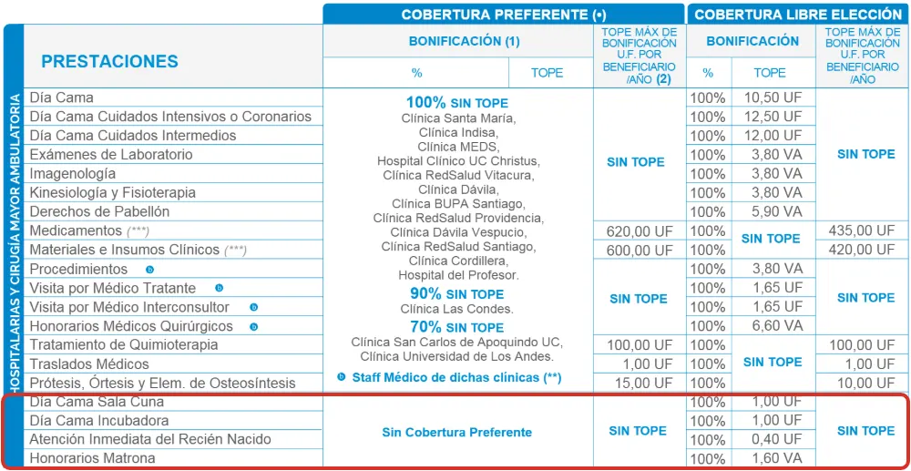
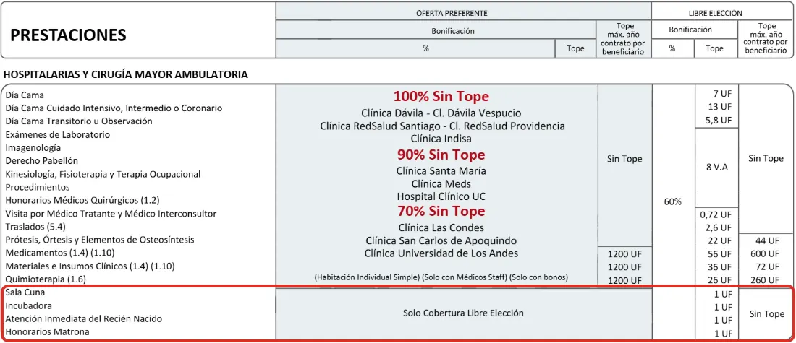

¿Conviene contratar una Isapre estando embarazada?
Sí se puede, y en muchos casos conviene. Lo que hace la diferencia es el mes en que entras y cómo queda cubierto tu hijo.
Muchas mujeres creen que una Isapre no las va a aceptar si ya están embarazadas, o que no les va a cubrir el parto. No es así. Te puedes cambiar de Fonasa a una Isapre estando embarazada, pero antes conviene entender dos cosas: mientras más avanzado el embarazo, menor es la cobertura del parto, y lo que de verdad puede salir caro muchas veces no es el parto, sino lo que el bebé necesite después.
¿Te pueden rechazar por estar embarazada?
No. Desde 2014, la Superintendencia de Salud no considera el embarazo una preexistencia, sino un estado fisiológico transitorio. Por eso no se informa en la declaración de salud, la Isapre no te puede rechazar ni excluir el parto por estar embarazada, y tampoco puede terminar tu contrato por no haberlo declarado.
Además, desde diciembre de 2019 ya no se venden los planes con cobertura reducida de parto, los llamados "planes sin útero". Y desde abril de 2020 los planes nuevos usan una tabla de factores única: una mujer en edad fértil ya no paga más que un hombre de su misma edad.
La regla de los novenos: el mes en que entras sí importa
Si quedaste embarazada antes de contratar, la Isapre cubre el parto de forma proporcional. Se toman los meses que tu plan va a estar vigente hasta el parto y se dividen por los nueve meses de embarazo: esa es la parte de la cobertura del plan que se aplica al parto. Los meses se cuentan desde que empiezan los beneficios del contrato, no desde el día en que firmas.
| Tus beneficios parten | Parte cubierta | Plan que cubre el parto al 100% |
|---|---|---|
| Antes del embarazo | 9 de 9 | 100% |
| En el mes 2 de embarazo | 8 de 9 | 89% |
| En el mes 3 | 7 de 9 | 78% |
| En el mes 4 | 6 de 9 | 67% |
| En el mes 6 | 4 de 9 | 44% |
| En el mes 8 | 2 de 9 | 22% |
Es la cobertura mínima que exige la norma, calculada sobre la duración real del embarazo, y la Isapre puede ofrecer condiciones mejores. Ejemplo referencial: lo que pagas al final también depende de los topes de tu plan.
Por eso, si lo estás planificando, lo ideal es contratar antes de embarazarte. Y si ya lo estás, nuestra recomendación es entrar a más tardar al tercer mes, para que la mayor parte del parto quede cubierta por tu plan.
Si ya estás en una Isapre, piénsalo dos veces antes de cambiarte. La regla de los novenos también se aplica si te cambias a otra Isapre estando embarazada, o si te incorporas como carga de tu pareja. Un plan nuevo con mejor porcentaje puede terminar cubriendo menos tu parto que el que ya tienes.
¿Y si me quedo en Fonasa? Lo que cubre el PAD de parto
Si estás en Fonasa, en los tramos B, C o D, puedes tener a tu hijo en una clínica en convenio con el bono PAD de parto: un precio fijo que incluye al equipo médico, tu hospitalización y la atención normal del recién nacido. Para un embarazo de bajo riesgo que termina en un parto sin complicaciones, funciona bien.
El problema es lo que queda fuera del paquete. El PAD está pensado para embarazos de bajo riesgo, y cubre el parto y la atención normal del bebé. Si tu hijo nace prematuro o necesita cuidados adicionales, como neonatología, UTI o UCI, eso no lo cubre el PAD y se cobra aparte. Fonasa lo bonifica solo hasta su arancel, y la diferencia la pagas tú.
En una clínica privada, una hospitalización neonatal puede superar fácilmente los $10 millones, según los días y lo que necesite el bebé. Es justo el tipo de cuenta que nadie tiene presupuestada.
En una Isapre, en cambio, esas atenciones las cubre el plan. Si inscribes a tu hijo a tiempo, queda cubierto desde que nace con la cobertura de tu plan, y si la cuenta es de alto costo existe la CAEC, siempre que se atienda en la red que designa la Isapre. Eso sí, no todos los planes cubren igual al recién nacido, como verás más abajo. Por eso, más que el parto, lo que conviene mirar es cómo queda protegido tu hijo. Si todavía estás decidiendo entre los dos sistemas, revisa las diferencias entre Fonasa e Isapre.
Qué revisar del plan antes de firmar
El porcentaje de cobertura dice poco si no miras los topes. En maternidad, estos son los que más pesan:
- Parto normal y cesárea. Revisa el tope en UF de cada uno, no solo el porcentaje.
- Honorarios médicos. El tope para el equipo que te atiende: obstetra, matrona, anestesista y pediatra.
- Día cama y pabellón. Cuánto cubre el plan por cada día de hospitalización y por el uso de pabellón.
- Sala cuna, incubadora y neonatología. Si tienen cobertura preferente o solo libre elección, y con qué tope por día. Si el bebé necesita cuidados, ahí es donde la cuenta se dispara.
- Medicamentos e insumos. Suelen tener topes bajos, y en una hospitalización se acumulan rápido.
- Tu clínica. Que la maternidad donde te quieres atender esté en la red preferente del plan, y conocer la red GES y CAEC de la Isapre.
Un ejemplo real: "100% sin tope", pero no para el recién nacido
Estos son dos planes individuales reales, de gama alta. Los dos cubren la hospitalización al 100% o al 90% sin tope en clínicas como Dávila, Indisa, Santa María o UC Christus. Pero mira qué pasa con las prestaciones del recién nacido:
| Prestación | Plan A | Plan B |
|---|---|---|
| Hospitalización en su red preferente | 100%, 90% o 70% sin tope, según la clínica | 100%, 90% o 70% sin tope, según la clínica |
| Recién nacido: sin cobertura preferente, solo libre elección | ||
| Día cama sala cuna | 100%, tope de 1 UF | 60%, tope de 1 UF |
| Día cama incubadora | 100%, tope de 1 UF | 60%, tope de 1 UF |
| Atención inmediata del recién nacido | 100%, tope de 0,4 UF | 60%, tope de 1 UF |
| Honorarios de matrona | 100%, tope de 1,6 VA | 60%, tope de 1 UF |
No mostramos el nombre de la Isapre ni del plan: el punto no es un plan en particular, sino lo que conviene revisar en cualquiera. VA: veces el arancel de la Isapre.
Así aparece en los documentos de los planes. Toca cada imagen para verla en grande:


En los dos planes, la sala cuna, la incubadora, la atención inmediata del recién nacido y la matrona no tienen cobertura preferente. Se cubren por libre elección, con un tope de 1 UF por día de sala cuna o incubadora. Un día de incubadora en una clínica privada cuesta bastante más que eso, y la diferencia la pagas tú, aunque el plan diga "100% sin tope".
Por eso no basta con mirar el porcentaje ni la clínica. Antes de firmar, revisa tu plan con un asesor, sobre todo si estás embarazada o lo estás planificando: estos detalles están en la letra chica y casi nunca aparecen en una cotización.
Cómo y cuándo inscribir a tu hijo como carga
El plazo que más importa es el primer mes de vida. Si lo inscribes antes de que cumpla un mes, queda cubierto desde que nace y sin declaración de salud. Si lo haces después del mes y antes de los 90 días, tienes que llenar una declaración de salud, y los beneficios parten desde que lo incorporas, no desde el nacimiento.
Algunas Isapres permiten inscribirlo antes de nacer, desde el séptimo mes de embarazo, con un certificado médico que indique la fecha probable de parto. Es la forma más segura: cuando nace ya está en el contrato, y después solo completas sus datos con el certificado de nacimiento.
Ten presente que cada carga suma al precio del plan, así que conviene tenerlo considerado desde antes.
Entonces, ¿conviene?
- Si lo estás planificando: entra antes de embarazarte. El parto queda con toda la cobertura de tu plan.
- Si tienes hasta tres meses de embarazo: todavía conviene. La mayor parte del parto queda cubierta, y tu hijo puede quedar protegido desde que nace si lo inscribes a tiempo.
- Si estás más avanzada: el parto va a quedar con menos cobertura. Hay que compararlo con el PAD caso a caso, pensando también en cómo quedaría cubierto tu hijo.
Preguntas frecuentes
¿Puedo entrar a una Isapre si estoy embarazada?
Sí. El embarazo no es una preexistencia, no se informa en la declaración de salud y no te pueden rechazar por eso. Lo que cambia es la cobertura del parto, que se calcula con la regla de los novenos.
¿Hasta qué mes de embarazo conviene cambiarse a una Isapre?
Lo ideal es antes de embarazarte. Si ya lo estás, nuestra recomendación es a más tardar al tercer mes, para que la mayor parte del parto quede cubierta por el plan.
¿El PAD de parto de Fonasa cubre la UCI neonatal?
No. El PAD cubre un parto de bajo riesgo y la atención normal del recién nacido. Si el bebé nace prematuro o necesita neonatología, UTI o UCI, eso se cobra aparte.
¿Todos los planes de Isapre cubren igual al recién nacido?
No. Hay planes que cubren la hospitalización al 100% sin tope en su red preferente, pero dejan la sala cuna, la incubadora y la atención inmediata del recién nacido solo con libre elección y topes de alrededor de 1 UF. Por eso conviene revisar el plan con un asesor antes de firmar.
¿Cuánto plazo tengo para inscribir a mi hijo en la Isapre?
Un mes desde que nace, para que quede cubierto desde el nacimiento y sin declaración de salud. Algunas Isapres permiten inscribirlo desde el séptimo mes de embarazo.
¿Cuál es la mejor Isapre en 2026? Tabla comparativa →
¿Fonasa o Isapre? Qué conviene más →
Los 8 errores más comunes al contratar una Isapre →
De Fonasa a Isapre: tips para elegir un buen plan →
¿Estás embarazada o lo estás planificando?
Revisamos en qué mes estás, qué plan te conviene y cómo quedaría cubierto tu hijo. Gratis y sin compromiso.
Quiero que me asesoren →La información de este artículo es general y puede cambiar según la normativa vigente. Se basa en los criterios de la Superintendencia de Salud sobre embarazo y cobertura proporcional del parto (Gobierno de Chile) y en las condiciones del PAD de parto de Fonasa. Para evaluar tu caso particular, te recomendamos una asesoría.